|
Chapitre 12
|
- Triangles - Partie 2
|
Activité Introduction
-
Dans chaque cas, mesurer à l'aide des instruments de géométrie la hauteur de l'avion par rapport au sol en traçant les traits de construction nécessaires.
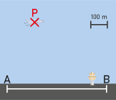
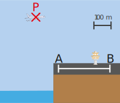
-
Sur chaque figure tracer le triangle ABC et colorier le segment qui a permis d'obtenir la hauteur demandée dans la question 1. Comment définir ce segment ? Que doit-on construire pour mesurer cette hauteur ?
Médiatrice :
Rappel :
La
médiatrice d'un segment est la droite perpendiculaire à ce segment et qui le coupe en son milieu.
Propriétés
- Si un point est situé sur la médiatrice d'un segment, alors ce point est équidistant des extrémités de ce segment.
- Si un point est équidistant des extrémités d'un segment, alors ce point appartient à la médiatrice de ce segment.
Exemple :
Dans le triangle :
Propriété :
Les médiatrices d'un triangle sont concourante (elles se croisent en un même point).
Exemples :
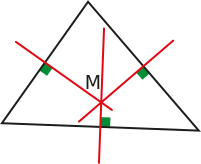
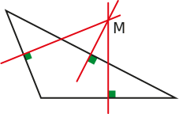
Remarques :
- Ce point est à égale distance des sommets du triangle.
-
C'est le centre du cercle circonscrit au triangle :
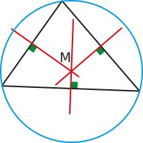
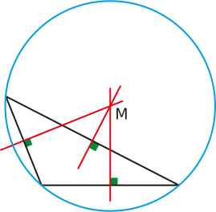
Hauteurs :
Définition :
Une hauteur d'un triangle est une droite qui passe par un sommet de ce triangle et qui est perpendiculaire au côté opposé à ce sommet.
Exemples :
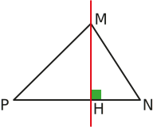
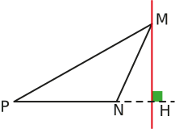
Remarque :
- Une hauteur peut-être en dehors du triangle.
- Dans chacun des exemples précédents, le point H est appelé pied de la hauteur issue de M.
Propriété :
Propriété :
Les hauteurs d'un triangle sont concourante (elles se croisent en un même point nommé orthocentre du cercle).
Exemples :
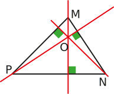
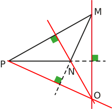
Aire du triangle :
Dans un triangle quelconque
$\mathscr{A}=\frac{Base\times Hauteur}{2}$ |
Dans un triangle rectangle
$\mathscr{A}=\frac{a\times b}{2}$ |
| 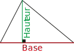 |
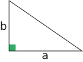 |
Exemple :
-
L'aire d'un triangle rectangle dont les côtés de l'angle droit mesurent 6cm et 8cm est $\mathscr{A}=\frac{6\times8}{2}=\frac{48}{2}=24 cm²$.